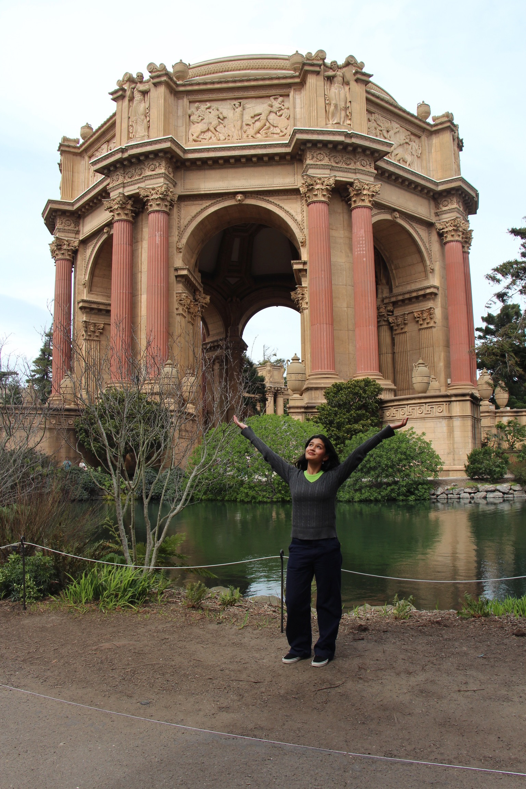

Hello World! I'm Rishika!

I'm a freshman at California Polytechnic University San Luis Obispo studying Computer Science. I fell in love with computer science when I discovered Scratch in third grade. This simple software empowered me to self-learn more elaborate languages like Java and Python later in my coding journey. I love to problem-solve (even if it means debugging code) and address gaps in our community.
Feel free to reach out at: rkjain [at] calpoly [dot] edu
Skills:
- Java, Python, React, HTML/CSS/JavaScript, Excel, Overleaf, Tableau